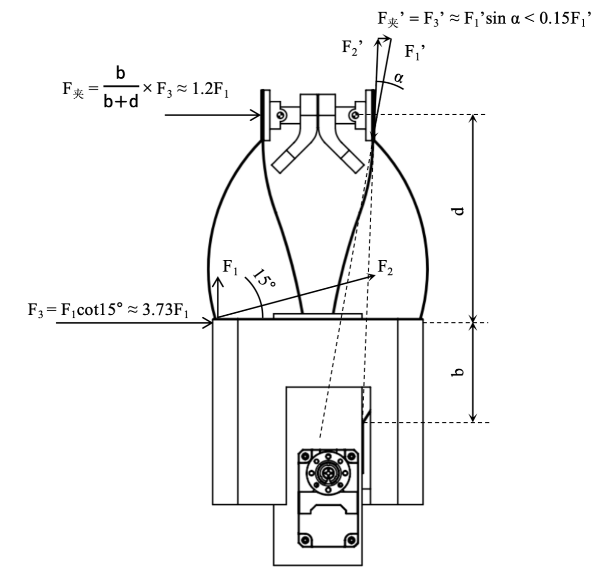
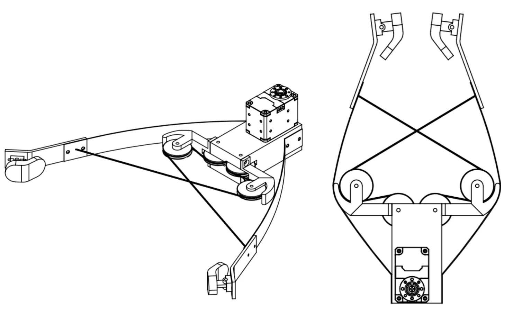

Flexible Gripper, Robot ‘Konka-1’
Concept 1 for the Flexible Gripper, Robot ‘Konka-1’

Design Concept
This solution increases the clamping force of the flexible gripper as the two fingers approach closure by introducing a sleeve mechanism.
During the clamping process, the motor pulls the inner elastic steel sheets backward via a rope mechanism and simultaneously drives the sleeve forward through a gear-rack mechanism. As the gripper nears full closure, the sleeve begins to contact and apply pressure to the outer elastic steel sheets, thereby compensating for the clamping force.
Force Analysis

Effectiveness of Clamping Force Compensation:
Based on the mechanism design, the force relationships can be described as follows:
When the gripper’s two fingers are about to close without the compensation mechanism:
Equations (1)–(3) give a clamping-to-input force ratio of about 1.2 for the compensation mechanism and less than 0.15 for the main drive alone when the fingers are nearly closed.
Fingertip Mechanism

Dual-Surface Design: The two surfaces form a 45° angle with each other, and the entire fingertip can passively rotate around its base within a range of 15°–20°. This design allows the fingertip to better adapt to various sizes and shapes of objects being gripped, ensuring that one of the surfaces always achieves good contact with the object.
Concept 2 for the Flexible Gripper, Robot ‘Konka-1’

This concept increases the clamping force as the two fingers are about to close by replacing the inner elastic sheet with a rope drive mechanism. By introducing two outer pulleys, the angle between the rope and the elastic sheet is increased, thereby avoiding the issue of the motor power being insufficiently directed towards the clamping force when the fingers are nearly closed.